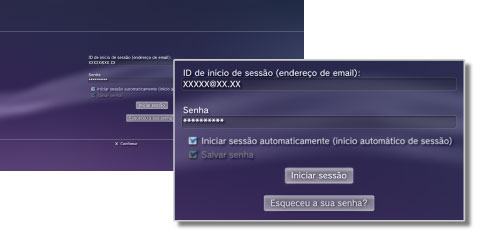

PlayStation™Network > Salvando sua senha / Iniciando a sessão automaticamente
Salvando sua senha / Iniciando a sessão automaticamente
Para utilizar este recurso, pode ser necessário atualizar o software de sistema.
Se você salvar sua senha, ela será preenchida previamente na tela início de sessão. Se você também definir o início automático da sessão, o sistema PS3™ iniciará automaticamente a sessão na PSNSM ao ligar o sistema.
Avisos
- Salvar sua senha pode permitir que outros usuários utilizem os serviços PSNSM ou vejam outras informações de sua conta.
- Antes de levar seu sistema PS3™ a um serviço autorizado, desmarque a opção [Salvar senha] na tela de início de sessão da PSNSM para todos os usuários. Isto ajudará a impedir o acesso ou o uso não autorizado de seu cartão de crédito ou outros detalhes pessoais.
- Antes de dar seu sistema PS3™ para terceiros por qualquer motivo, incluindo o retorno (quando permitido), apague todos os dados e restaure as configurações padrão do sistema PS3™. Isto ajudará a impedir o acesso ou o uso não autorizado de seu cartão de crédito ou outros detalhes pessoais.
1. |
Selecione |
|---|---|
2. |
Insira seu ID de início de sessão (endereço de e-mail) e senha. |
3. |
Selecione as caixas de seleção de [Salvar senha] e [Iniciar Sessão Automaticamente (Início automático de sessão)].  |
Dica
Se [Iniciar Sessão Automaticamente (Início automático de sessão)] for definido, o ícone de  (Iniciar sessão) não será mais exibido.
(Iniciar sessão) não será mais exibido.
Desmarcando a opção de início automático de sessão
Selecione  (Gerenciamento da conta) em
(Gerenciamento da conta) em  (PlayStation™Network) e, então, selecione [Início automático de sessão desativado] no menu de opções. Quando você ligar o sistema PS3™, a sessão não será iniciada automaticamente.
(PlayStation™Network) e, então, selecione [Início automático de sessão desativado] no menu de opções. Quando você ligar o sistema PS3™, a sessão não será iniciada automaticamente.
Desmarcando a opção para salvar senha (apagando a senha)
1. |
Selecione |
|---|---|
2. |
Na tela onde você insere seu ID de início de sessão e senha, desmarque a caixa de seleção [Salvar senha]. |
Dicas
- Se o início automático de sessão estiver definido, o ícone de (Iniciar sessão) não será mais exibido. Nesse caso, você deverá primeiro desmarcar a definição para o início automático de sessão.
- Mesmo que a definição para o início automático de sessão esteja desmarcada, a sessão será iniciada automaticamente se você estiver desconectado temporariamente da rede quando a sessão foi iniciada.